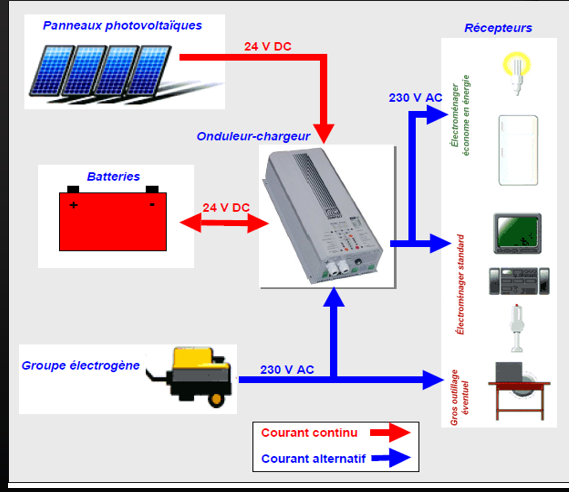

Énergie Projet de BUT GEII
Installation photovoltaïque
Dimensionner un système de panneaux photovoltaïques qui produit, stocke et distribue l’énergie électrique.
- Photovoltaïque
- Stockage
- Conversion

De la production aux récepteurs
Le dimensionnement comprend le calcul de la puissance produite, le choix des équipements de stockage et la conception du réseau de distribution. Le schéma relie les panneaux et les batteries en 24 V continu à un onduleur-chargeur, puis aux récepteurs en 230 V alternatif.